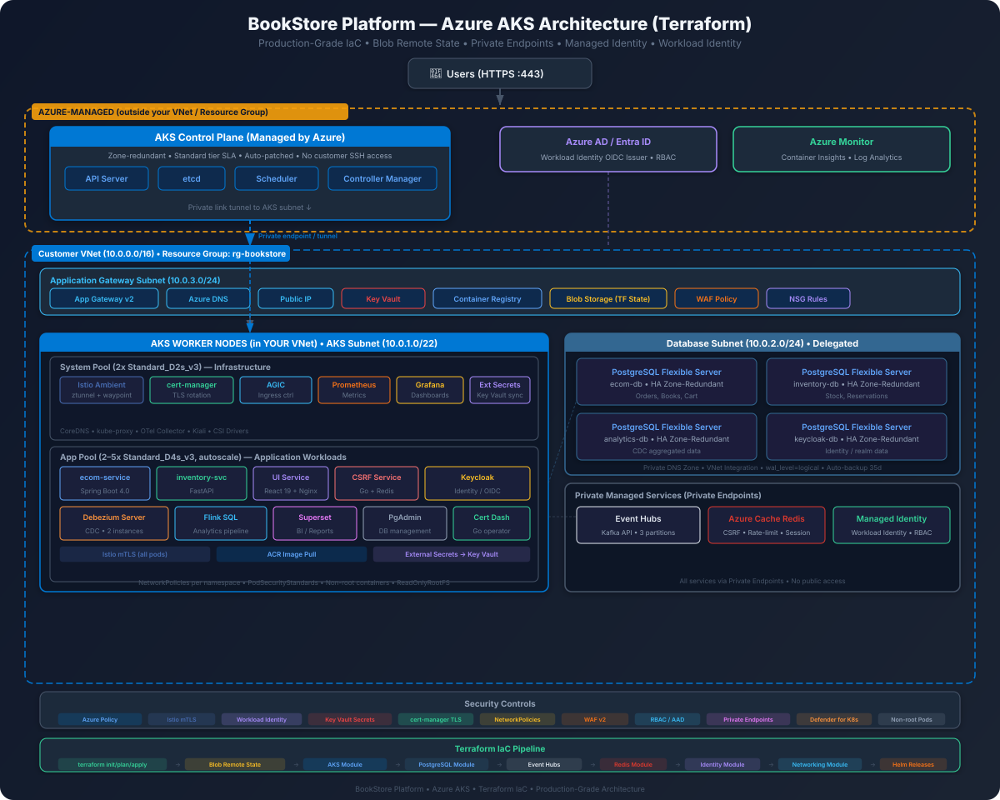

Production deployment of the full BookStore Platform to Azure managed services
The Azure deployment replaces every local component with a managed Azure equivalent. The application code and Kubernetes manifests remain largely the same — only the backing services change.

| Local (kind) | Azure Managed Service | Why |
|---|---|---|
| kind cluster | Azure Kubernetes Service (AKS) | Managed K8s control plane, auto-scaling node pools |
| CloudNativePG (4 clusters) | Azure Database for PostgreSQL Flexible Server (4 instances) | Built-in HA, backups, monitoring, VNet integration |
| Self-hosted Kafka (KRaft) | Azure Event Hubs (Kafka protocol) | Fully managed, auto-scaling, Kafka-wire-compatible |
| Self-hosted Redis | Azure Cache for Redis | Managed HA, TLS, private endpoint |
| K8s Secrets | Azure Key Vault | HSM-backed, RBAC, audit logging, rotation |
| kind NodePorts | Application Gateway + Azure DNS | WAF, TLS termination, public DNS |
| Local Docker images | Azure Container Registry (ACR) | Private registry, geo-replication, vulnerability scanning |
| Istio Ambient Mesh | Istio on AKS (self-managed) | Same mesh; AKS supports ambient mode |
| cert-manager (self-signed) | cert-manager + Let's Encrypt | Real CA-signed certificates via ACME |
| N/A | Managed Identities | Passwordless auth between Azure services |
| N/A | VNet + NSGs | Network isolation, private endpoints |
| N/A | Azure Blob Storage | Terraform remote state with locking |
Internet
|
[Azure DNS Zone]
|
[Application Gateway]
WAF v2 + TLS (HTTPS)
/ | \
myecom.net api.svc.net idp.kc.net
\ | /
+-----------------------------------------+
| AKS Cluster (VNet) |
| |
| [UI Service] [ecom-service] [inventory] |
| [Keycloak] [Debezium] [Flink] |
| [Superset] [Prometheus] [Grafana] |
| |
| [Istio Ambient Mesh - ztunnel mTLS] |
+--------------+---------+----------------+
| |
+----------------+---------+------------------+
| | | |
[PostgreSQL x4] [Event Hubs] [Redis] [Key Vault]
Flexible Server Kafka proto Cache Secrets
(Private DNS) (Svc Endpt) (Priv EP) (Priv EP)
| | | |
+----------------+---------+------------------+
|
[Azure Container Registry]
Docker images (ACR)# Install Azure CLI (macOS)
brew install azure-cli terraform kubectl helm istioctl
# Login to Azure
az login
# Set the subscription (replace with your subscription ID)
az account set --subscription "YOUR_SUBSCRIPTION_ID"
# Verify
az account show --output table
terraform version
kubectl version --client# These providers must be registered in your subscription
az provider register --namespace Microsoft.ContainerService
az provider register --namespace Microsoft.DBforPostgreSQL
az provider register --namespace Microsoft.EventHub
az provider register --namespace Microsoft.Cache
az provider register --namespace Microsoft.KeyVault
az provider register --namespace Microsoft.Network
az provider register --namespace Microsoft.ContainerRegistry
az provider register --namespace Microsoft.OperationalInsights
# Verify all are registered
az provider list --query "[?namespace=='Microsoft.ContainerService'].registrationState" -o tsv00- through 13- to indicate logical ordering. Terraform processes all .tf files in a directory together regardless of filename, but the numbering helps human readers follow the dependency chain.
Before running terraform init, you need a storage account for remote state. This ensures state is shared across team members and locked during applies.
# Run these Azure CLI commands BEFORE terraform init
# They create the storage account that Terraform will use for state
# Variables
RESOURCE_GROUP="bookstore-tfstate-rg"
STORAGE_ACCOUNT="bookstoretfstate$RANDOM"
CONTAINER_NAME="tfstate"
LOCATION="eastus"
# Create resource group for state
az group create --name $RESOURCE_GROUP --location $LOCATION
# Create storage account (must be globally unique)
az storage account create \
--name $STORAGE_ACCOUNT \
--resource-group $RESOURCE_GROUP \
--location $LOCATION \
--sku Standard_LRS \
--encryption-services blob \
--min-tls-version TLS1_2
# Create blob container
az storage container create \
--name $CONTAINER_NAME \
--account-name $STORAGE_ACCOUNT
# Print the values to use in 00-backend.tf
echo "Storage Account: $STORAGE_ACCOUNT"
echo "Resource Group: $RESOURCE_GROUP"# ─────────────────────────────────────────────────────────────
# 00-backend.tf — Azure Blob Storage remote state backend
# ─────────────────────────────────────────────────────────────
# Terraform state is stored in Azure Blob Storage with
# native state locking via blob leases. This prevents
# concurrent applies from corrupting state.
#
# IMPORTANT: The storage account must exist BEFORE running
# `terraform init`. Create it with the Azure CLI commands above.
# ─────────────────────────────────────────────────────────────
terraform {
backend "azurerm" {
# Resource group containing the storage account
resource_group_name = "bookstore-tfstate-rg"
# Storage account name (must match what you created)
storage_account_name = "bookstoretfstate"
# Blob container for state files
container_name = "tfstate"
# State file name — unique per environment
key = "bookstore.terraform.tfstate"
# Use Azure CLI auth (inherits `az login` session)
use_azuread_auth = true
}
}bookstoretfstate with the actual name printed by the setup script. Azure storage account names must be globally unique and 3-24 characters (lowercase letters and numbers only).
# ─────────────────────────────────────────────────────────────
# 01-versions.tf — Provider version constraints
# ─────────────────────────────────────────────────────────────
# Pin provider versions to avoid breaking changes.
# The azurerm provider v4.x is a major upgrade with
# breaking changes from v3.x — do not downgrade.
# ─────────────────────────────────────────────────────────────
terraform {
required_version = ">= 1.7.0"
required_providers {
# Azure Resource Manager — manages all Azure resources
azurerm = {
source = "hashicorp/azurerm"
version = "~> 4.0"
}
# Kubernetes — deploys K8s resources into AKS
kubernetes = {
source = "hashicorp/kubernetes"
version = "~> 2.35"
}
# Helm — installs charts (Istio, cert-manager, etc.)
helm = {
source = "hashicorp/helm"
version = "~> 2.17"
}
# Random — generates unique suffixes and passwords
random = {
source = "hashicorp/random"
version = "~> 3.6"
}
}
}
# ─────────────────────────────────────────────────────────────
# Azure provider configuration
# ─────────────────────────────────────────────────────────────
# features {} block is required by azurerm v4.x even if empty.
# resource_group.prevent_deletion_if_contains_resources
# prevents accidental deletion of non-empty resource groups.
# ─────────────────────────────────────────────────────────────
provider "azurerm" {
features {
resource_group {
prevent_deletion_if_contains_resources = false
}
key_vault {
# Purge soft-deleted Key Vaults on destroy
purge_soft_delete_on_destroy = true
recover_soft_deleted_key_vaults = true
}
}
subscription_id = var.subscription_id
}# ─────────────────────────────────────────────────────────────
# 02-variables.tf — Input variables for the entire deployment
# ─────────────────────────────────────────────────────────────
# Override defaults via terraform.tfvars or -var flags.
# Sensitive values should come from environment variables:
# export TF_VAR_db_admin_password="your-password"
# ─────────────────────────────────────────────────────────────
# ── Azure Subscription ──
variable "subscription_id" {
description = "Azure subscription ID"
type = string
}
# ── General ──
variable "project" {
description = "Project name used as prefix for all resources"
type = string
default = "bookstore"
}
variable "environment" {
description = "Deployment environment (dev, staging, prod)"
type = string
default = "dev"
validation {
condition = contains(["dev", "staging", "prod"], var.environment)
error_message = "Environment must be one of: dev, staging, prod."
}
}
variable "location" {
description = "Azure region for all resources"
type = string
default = "eastus"
}
variable "resource_group_name" {
description = "Name of the resource group"
type = string
default = "bookstore-rg"
}
# ── Networking ──
variable "vnet_address_space" {
description = "Address space for the Virtual Network"
type = list(string)
default = ["10.0.0.0/16"]
}
variable "aks_subnet_cidr" {
description = "CIDR for AKS subnet (/22 for Azure CNI pod IPs)"
type = string
default = "10.0.0.0/22"
}
variable "db_subnet_cidr" {
description = "CIDR for PostgreSQL delegated subnet"
type = string
default = "10.0.10.0/24"
}
variable "redis_subnet_cidr" {
description = "CIDR for Redis private endpoint subnet"
type = string
default = "10.0.20.0/24"
}
variable "appgw_subnet_cidr" {
description = "CIDR for Application Gateway subnet"
type = string
default = "10.0.30.0/24"
}
# ── AKS ──
variable "kubernetes_version" {
description = "Kubernetes version for AKS"
type = string
default = "1.31"
}
variable "system_node_vm_size" {
description = "VM size for system node pool"
type = string
default = "Standard_D2s_v3"
}
variable "system_node_count" {
description = "Number of nodes in system pool"
type = number
default = 2
}
variable "app_node_vm_size" {
description = "VM size for application node pool"
type = string
default = "Standard_D4s_v3"
}
variable "app_node_min_count" {
description = "Minimum nodes in app pool (autoscaler)"
type = number
default = 2
}
variable "app_node_max_count" {
description = "Maximum nodes in app pool (autoscaler)"
type = number
default = 5
}
# ── Databases ──
variable "db_admin_username" {
description = "PostgreSQL administrator username"
type = string
default = "pgadmin"
}
variable "db_admin_password" {
description = "PostgreSQL administrator password (same for all 4 instances in dev)"
type = string
sensitive = true
}
variable "db_sku_name" {
description = "PostgreSQL SKU (B_Standard_B1ms for dev, GP_Standard_D2s_v3 for prod)"
type = string
default = "B_Standard_B1ms"
}
variable "db_storage_mb" {
description = "PostgreSQL storage size in MB"
type = number
default = 32768
}
variable "db_postgresql_version" {
description = "PostgreSQL major version"
type = string
default = "16"
}
# ── Event Hubs ──
variable "eventhubs_sku" {
description = "Event Hubs tier (Standard or Premium)"
type = string
default = "Standard"
}
variable "eventhubs_capacity" {
description = "Throughput units for Event Hubs"
type = number
default = 2
}
variable "eventhubs_auto_inflate_max" {
description = "Maximum throughput units for auto-inflate (0 to disable)"
type = number
default = 5
}
# ── Redis ──
variable "redis_sku_name" {
description = "Redis SKU (Basic for dev, Standard for prod)"
type = string
default = "Basic"
}
variable "redis_family" {
description = "Redis family (C for Basic/Standard, P for Premium)"
type = string
default = "C"
}
variable "redis_capacity" {
description = "Redis cache size (0 = 250MB, 1 = 1GB, 2 = 2.5GB)"
type = number
default = 0
}
# ── DNS / Domain ──
variable "domain_name" {
description = "Base domain name for the application"
type = string
default = "bookstore.example.com"
}
variable "enable_waf" {
description = "Enable WAF v2 on Application Gateway (adds cost)"
type = bool
default = false
}
# ── ACR ──
variable "acr_sku" {
description = "ACR SKU (Standard for dev, Premium for prod geo-replication)"
type = string
default = "Standard"
}
# ── Tags ──
variable "tags" {
description = "Common tags applied to all resources"
type = map(string)
default = {}
}# ─────────────────────────────────────────────────────────────
# 03-resource-group.tf — Resource group for all resources
# ─────────────────────────────────────────────────────────────
# All BookStore resources live in a single resource group.
# This simplifies cost tracking and teardown.
# ─────────────────────────────────────────────────────────────
# Common tags merged with user-provided tags
locals {
common_tags = merge({
project = var.project
environment = var.environment
managed_by = "terraform"
created_at = timestamp()
}, var.tags)
# Resource name prefix: "bookstore-dev" or "bookstore-prod"
name_prefix = "${var.project}-${var.environment}"
}
resource "azurerm_resource_group" "main" {
name = var.resource_group_name
location = var.location
tags = local.common_tags
}The VNet provides network isolation for all Azure resources. Each service type gets its own subnet with appropriate NSG rules and service delegations.
| Subnet | CIDR | Purpose |
|---|---|---|
| aks-subnet | 10.0.0.0/22 | AKS nodes + pod IPs (Azure CNI needs large range) |
| db-subnet | 10.0.10.0/24 | PostgreSQL Flexible Server (service delegation) |
| redis-subnet | 10.0.20.0/24 | Redis private endpoint |
| appgw-subnet | 10.0.30.0/24 | Application Gateway v2 |
# ─────────────────────────────────────────────────────────────
# 04-vnet.tf — Virtual Network, subnets, and NSGs
# ─────────────────────────────────────────────────────────────
# Network architecture:
# 10.0.0.0/16 — VNet address space
# 10.0.0.0/22 — AKS (1022 usable IPs for nodes + pods)
# 10.0.10.0/24 — PostgreSQL (delegated to Microsoft.DBforPostgreSQL)
# 10.0.20.0/24 — Redis private endpoints
# 10.0.30.0/24 — Application Gateway
# ─────────────────────────────────────────────────────────────
resource "azurerm_virtual_network" "main" {
name = "${local.name_prefix}-vnet"
location = azurerm_resource_group.main.location
resource_group_name = azurerm_resource_group.main.name
address_space = var.vnet_address_space
tags = local.common_tags
}
# ── AKS Subnet ──
# /22 gives 1022 usable IPs. Azure CNI assigns a VNet IP to
# every pod, so a /24 (254 IPs) would be exhausted quickly.
# Service endpoints allow AKS pods to reach Event Hubs and
# Storage without going through the public internet.
resource "azurerm_subnet" "aks" {
name = "${local.name_prefix}-aks-subnet"
resource_group_name = azurerm_resource_group.main.name
virtual_network_name = azurerm_virtual_network.main.name
address_prefixes = [var.aks_subnet_cidr]
service_endpoints = [
"Microsoft.Sql",
"Microsoft.Storage",
"Microsoft.EventHub",
"Microsoft.KeyVault",
]
}
# ── Database Subnet ──
# PostgreSQL Flexible Server requires a dedicated subnet with
# service delegation. No other resources can share this subnet.
resource "azurerm_subnet" "database" {
name = "${local.name_prefix}-db-subnet"
resource_group_name = azurerm_resource_group.main.name
virtual_network_name = azurerm_virtual_network.main.name
address_prefixes = [var.db_subnet_cidr]
delegation {
name = "postgresql-delegation"
service_delegation {
name = "Microsoft.DBforPostgreSQL/flexibleServers"
actions = [
"Microsoft.Network/virtualNetworks/subnets/join/action",
]
}
}
service_endpoints = [
"Microsoft.Storage",
]
}
# ── Redis Subnet ──
# Used for Redis private endpoint. Private endpoints ensure
# Redis traffic stays within the VNet (no public exposure).
resource "azurerm_subnet" "redis" {
name = "${local.name_prefix}-redis-subnet"
resource_group_name = azurerm_resource_group.main.name
virtual_network_name = azurerm_virtual_network.main.name
address_prefixes = [var.redis_subnet_cidr]
}
# ── Application Gateway Subnet ──
# App Gateway v2 requires its own dedicated subnet.
# Must not contain any other resources.
resource "azurerm_subnet" "appgw" {
name = "${local.name_prefix}-appgw-subnet"
resource_group_name = azurerm_resource_group.main.name
virtual_network_name = azurerm_virtual_network.main.name
address_prefixes = [var.appgw_subnet_cidr]
}
# ─────────────────────────────────────────────────────────────
# Network Security Groups (NSGs)
# ─────────────────────────────────────────────────────────────
# ── AKS NSG ──
# AKS manages its own NSG rules for node communication.
# We add explicit rules for known traffic patterns.
resource "azurerm_network_security_group" "aks" {
name = "${local.name_prefix}-aks-nsg"
location = azurerm_resource_group.main.location
resource_group_name = azurerm_resource_group.main.name
tags = local.common_tags
# Allow inbound from Application Gateway to AKS
security_rule {
name = "AllowAppGateway"
priority = 100
direction = "Inbound"
access = "Allow"
protocol = "Tcp"
source_port_range = "*"
destination_port_range = "80-443"
source_address_prefix = var.appgw_subnet_cidr
destination_address_prefix = var.aks_subnet_cidr
}
# Allow inbound from AKS to AKS (inter-node)
security_rule {
name = "AllowAKSInternal"
priority = 110
direction = "Inbound"
access = "Allow"
protocol = "*"
source_port_range = "*"
destination_port_range = "*"
source_address_prefix = var.aks_subnet_cidr
destination_address_prefix = var.aks_subnet_cidr
}
# Allow outbound to PostgreSQL subnet
security_rule {
name = "AllowOutboundPostgreSQL"
priority = 100
direction = "Outbound"
access = "Allow"
protocol = "Tcp"
source_port_range = "*"
destination_port_range = "5432"
source_address_prefix = var.aks_subnet_cidr
destination_address_prefix = var.db_subnet_cidr
}
# Allow outbound to Redis subnet
security_rule {
name = "AllowOutboundRedis"
priority = 110
direction = "Outbound"
access = "Allow"
protocol = "Tcp"
source_port_range = "*"
destination_port_range = "6380"
source_address_prefix = var.aks_subnet_cidr
destination_address_prefix = var.redis_subnet_cidr
}
}
resource "azurerm_subnet_network_security_group_association" "aks" {
subnet_id = azurerm_subnet.aks.id
network_security_group_id = azurerm_network_security_group.aks.id
}
# ── Database NSG ──
resource "azurerm_network_security_group" "database" {
name = "${local.name_prefix}-db-nsg"
location = azurerm_resource_group.main.location
resource_group_name = azurerm_resource_group.main.name
tags = local.common_tags
# Allow PostgreSQL from AKS subnet only
security_rule {
name = "AllowPostgreSQLFromAKS"
priority = 100
direction = "Inbound"
access = "Allow"
protocol = "Tcp"
source_port_range = "*"
destination_port_range = "5432"
source_address_prefix = var.aks_subnet_cidr
destination_address_prefix = var.db_subnet_cidr
}
# Deny all other inbound
security_rule {
name = "DenyAllInbound"
priority = 4096
direction = "Inbound"
access = "Deny"
protocol = "*"
source_port_range = "*"
destination_port_range = "*"
source_address_prefix = "*"
destination_address_prefix = "*"
}
}
resource "azurerm_subnet_network_security_group_association" "database" {
subnet_id = azurerm_subnet.database.id
network_security_group_id = azurerm_network_security_group.database.id
}
# ── Application Gateway NSG ──
resource "azurerm_network_security_group" "appgw" {
name = "${local.name_prefix}-appgw-nsg"
location = azurerm_resource_group.main.location
resource_group_name = azurerm_resource_group.main.name
tags = local.common_tags
# Allow HTTPS from internet
security_rule {
name = "AllowHTTPS"
priority = 100
direction = "Inbound"
access = "Allow"
protocol = "Tcp"
source_port_range = "*"
destination_port_range = "443"
source_address_prefix = "Internet"
destination_address_prefix = "*"
}
# Allow HTTP (for redirect to HTTPS)
security_rule {
name = "AllowHTTP"
priority = 110
direction = "Inbound"
access = "Allow"
protocol = "Tcp"
source_port_range = "*"
destination_port_range = "80"
source_address_prefix = "Internet"
destination_address_prefix = "*"
}
# Required: Azure Gateway Manager health probes
security_rule {
name = "AllowGatewayManager"
priority = 120
direction = "Inbound"
access = "Allow"
protocol = "Tcp"
source_port_range = "*"
destination_port_range = "65200-65535"
source_address_prefix = "GatewayManager"
destination_address_prefix = "*"
}
}
resource "azurerm_subnet_network_security_group_association" "appgw" {
subnet_id = azurerm_subnet.appgw.id
network_security_group_id = azurerm_network_security_group.appgw.id
}
# ── Private DNS Zone for PostgreSQL ──
# PostgreSQL Flexible Server with VNet integration requires
# a private DNS zone linked to the VNet.
resource "azurerm_private_dns_zone" "postgresql" {
name = "${local.name_prefix}.postgres.database.azure.com"
resource_group_name = azurerm_resource_group.main.name
tags = local.common_tags
}
resource "azurerm_private_dns_zone_virtual_network_link" "postgresql" {
name = "${local.name_prefix}-pg-dns-link"
private_dns_zone_name = azurerm_private_dns_zone.postgresql.name
resource_group_name = azurerm_resource_group.main.name
virtual_network_id = azurerm_virtual_network.main.id
registration_enabled = false
}05-aks.tf only defines worker node pools. The control plane connects to your AKS subnet via an Azure-managed tunnel (or private link with private_cluster_enabled = true). kubectl traffic stays within the VNet when private cluster mode is enabled.oidc_issuer_enabled = true, AKS creates an OIDC identity provider for Workload Identity, allowing pods to authenticate to Azure services (Key Vault, Blob Storage, PostgreSQL) without static credentials — similar to AWS IRSA.# ─────────────────────────────────────────────────────────────
# 05-aks.tf — Azure Kubernetes Service cluster
# ─────────────────────────────────────────────────────────────
# Two node pools:
# - system: runs kube-system, istio, cert-manager (tainted)
# - app: runs application workloads (auto-scaling)
#
# Azure CNI networking gives every pod a VNet IP, enabling
# direct communication with PostgreSQL and Redis in the VNet.
# ─────────────────────────────────────────────────────────────
# Log Analytics workspace for Container Insights
resource "azurerm_log_analytics_workspace" "aks" {
name = "${local.name_prefix}-logs"
location = azurerm_resource_group.main.location
resource_group_name = azurerm_resource_group.main.name
sku = "PerGB2018"
retention_in_days = 30
tags = local.common_tags
}
resource "azurerm_kubernetes_cluster" "main" {
name = "${local.name_prefix}-aks"
location = azurerm_resource_group.main.location
resource_group_name = azurerm_resource_group.main.name
dns_prefix = "${local.name_prefix}-aks"
kubernetes_version = var.kubernetes_version
tags = local.common_tags
# ── System Node Pool (default) ──
# Runs cluster-critical workloads: kube-system, Istio,
# cert-manager, External Secrets Operator.
default_node_pool {
name = "system"
vm_size = var.system_node_vm_size
node_count = var.system_node_count
vnet_subnet_id = azurerm_subnet.aks.id
os_disk_size_gb = 128
os_disk_type = "Managed"
type = "VirtualMachineScaleSets"
max_pods = 50
# Taint system pool so app workloads land on app pool
node_labels = {
"nodepool-type" = "system"
}
upgrade_settings {
max_surge = "10%"
drain_timeout_in_minutes = 0
node_soak_duration_in_minutes = 0
}
}
# ── Identity ──
# SystemAssigned managed identity eliminates the need for
# service principal credentials. Azure auto-manages rotation.
identity {
type = "SystemAssigned"
}
# ── Network Profile ──
# Azure CNI: every pod gets a VNet IP from the AKS subnet.
# Calico network policy: enforces K8s NetworkPolicy resources.
network_profile {
network_plugin = "azure"
network_policy = "calico"
service_cidr = "10.1.0.0/16"
dns_service_ip = "10.1.0.10"
load_balancer_sku = "standard"
}
# ── OIDC Issuer (for Workload Identity) ──
# Enables pods to authenticate to Azure services using
# Kubernetes ServiceAccount tokens (no passwords needed).
oidc_issuer_enabled = true
workload_identity_enabled = true
# ── Monitoring ──
oms_agent {
log_analytics_workspace_id = azurerm_log_analytics_workspace.aks.id
}
# ── Azure Policy ──
# Enforces Kubernetes best practices (e.g., no privileged
# containers, resource limits required).
azure_policy_enabled = true
# ── Auto-scaler Profile ──
auto_scaler_profile {
balance_similar_node_groups = true
max_graceful_termination_sec = "600"
scale_down_delay_after_add = "10m"
scale_down_unneeded = "10m"
scan_interval = "10s"
}
}
# ── Application Node Pool ──
# Separate pool for app workloads with auto-scaling.
# Uses larger VMs (D4s_v3 = 4 vCPU, 16 GB RAM).
resource "azurerm_kubernetes_cluster_node_pool" "app" {
name = "app"
kubernetes_cluster_id = azurerm_kubernetes_cluster.main.id
vm_size = var.app_node_vm_size
min_count = var.app_node_min_count
max_count = var.app_node_max_count
auto_scaling_enabled = true
os_disk_size_gb = 128
os_disk_type = "Managed"
vnet_subnet_id = azurerm_subnet.aks.id
max_pods = 50
tags = local.common_tags
node_labels = {
"nodepool-type" = "app"
}
# Tolerate app workload scheduling
node_taints = []
upgrade_settings {
max_surge = "10%"
drain_timeout_in_minutes = 0
node_soak_duration_in_minutes = 0
}
}
# ── Role Assignments ──
# Grant AKS identity Network Contributor on the VNet
# (required for Azure CNI to assign pod IPs).
resource "azurerm_role_assignment" "aks_network" {
scope = azurerm_virtual_network.main.id
role_definition_name = "Network Contributor"
principal_id = azurerm_kubernetes_cluster.main.identity[0].principal_id
}Standard_D2s_v3 for both pools and setting app_node_min_count = 1. For production, the defaults (D4s_v3, 2-5 nodes) handle real traffic with headroom for rolling updates.
# ─────────────────────────────────────────────────────────────
# 06-acr.tf — Azure Container Registry
# ─────────────────────────────────────────────────────────────
# Stores Docker images for all microservices.
# AKS authenticates via AcrPull role assignment (no docker
# login credentials needed on the cluster).
# ─────────────────────────────────────────────────────────────
# Random suffix to ensure globally unique ACR name
# (ACR names must be alphanumeric, 5-50 chars)
resource "random_string" "acr_suffix" {
length = 6
special = false
upper = false
numeric = true
}
resource "azurerm_container_registry" "main" {
name = "${var.project}acr${random_string.acr_suffix.result}"
resource_group_name = azurerm_resource_group.main.name
location = azurerm_resource_group.main.location
sku = var.acr_sku
admin_enabled = true
tags = local.common_tags
# Premium-only features (uncomment for prod)
# georeplications {
# location = "westus"
# tags = local.common_tags
# }
}
# Grant AKS the ability to pull images from ACR
# This uses the kubelet identity (not the cluster identity)
resource "azurerm_role_assignment" "aks_acr_pull" {
scope = azurerm_container_registry.main.id
role_definition_name = "AcrPull"
principal_id = azurerm_kubernetes_cluster.main.kubelet_identity[0].object_id
}Four isolated PostgreSQL instances, one per service boundary. Each uses VNet integration (private DNS) so traffic never leaves the VNet.
# ─────────────────────────────────────────────────────────────
# 07-postgresql.tf — 4 Azure Database for PostgreSQL Flexible
# Server instances (ecom, inventory, analytics, keycloak)
# ─────────────────────────────────────────────────────────────
# Each service gets its own isolated DB server. No cross-service
# database access is permitted (enforced by credentials).
#
# VNet integration: servers are accessible only from within
# the VNet via private DNS zone. No public endpoint.
#
# wal_level = logical: required for Debezium CDC to capture
# row-level changes from the ecom and inventory databases.
# ─────────────────────────────────────────────────────────────
# Database definitions — name, database, and user for each service
locals {
databases = {
ecom = {
name = "${local.name_prefix}-ecom-db"
database = "ecom"
user = "ecom"
}
inventory = {
name = "${local.name_prefix}-inventory-db"
database = "inventory"
user = "inventory"
}
analytics = {
name = "${local.name_prefix}-analytics-db"
database = "analytics"
user = "analytics"
}
keycloak = {
name = "${local.name_prefix}-keycloak-db"
database = "keycloak"
user = "keycloak"
}
}
}
# Generate a unique password for each database instance
resource "random_password" "db_passwords" {
for_each = local.databases
length = 32
special = true
override_special = "!#$%&*()-_=+[]{}<>:?"
min_lower = 4
min_upper = 4
min_numeric = 4
min_special = 2
}
# ── PostgreSQL Flexible Server instances ──
resource "azurerm_postgresql_flexible_server" "databases" {
for_each = local.databases
name = each.value.name
resource_group_name = azurerm_resource_group.main.name
location = azurerm_resource_group.main.location
version = var.db_postgresql_version
administrator_login = var.db_admin_username
administrator_password = random_password.db_passwords[each.key].result
storage_mb = var.db_storage_mb
sku_name = var.db_sku_name
zone = "1"
tags = local.common_tags
# VNet integration — private access only
delegated_subnet_id = azurerm_subnet.database.id
private_dns_zone_id = azurerm_private_dns_zone.postgresql.id
# Backup configuration
backup_retention_days = 7
geo_redundant_backup_enabled = var.environment == "prod" ? true : false
# High availability (prod only — doubles cost)
dynamic "high_availability" {
for_each = var.environment == "prod" ? [1] : []
content {
mode = "ZoneRedundant"
standby_availability_zone = "2"
}
}
depends_on = [
azurerm_private_dns_zone_virtual_network_link.postgresql,
]
}
# ── Databases ──
# Create the application database on each server
resource "azurerm_postgresql_flexible_server_database" "databases" {
for_each = local.databases
name = each.value.database
server_id = azurerm_postgresql_flexible_server.databases[each.key].id
charset = "UTF8"
collation = "en_US.utf8"
}
# ── Server Parameters ──
# wal_level = logical: enables logical replication slots for
# Debezium CDC. Required on ecom and inventory; set on all
# for consistency.
resource "azurerm_postgresql_flexible_server_configuration" "wal_level" {
for_each = local.databases
name = "wal_level"
server_id = azurerm_postgresql_flexible_server.databases[each.key].id
value = "logical"
}
# max_replication_slots: Debezium creates one slot per connector.
# Default (10) is sufficient but we set it explicitly.
resource "azurerm_postgresql_flexible_server_configuration" "max_replication_slots" {
for_each = local.databases
name = "max_replication_slots"
server_id = azurerm_postgresql_flexible_server.databases[each.key].id
value = "10"
}
# max_wal_senders: number of concurrent WAL streaming connections.
resource "azurerm_postgresql_flexible_server_configuration" "max_wal_senders" {
for_each = local.databases
name = "max_wal_senders"
server_id = azurerm_postgresql_flexible_server.databases[each.key].id
value = "10"
}
# ── Firewall rule: Allow Azure services ──
# Allows Azure-internal traffic (e.g., from AKS via VNet).
# Note: With VNet integration, this is optional but adds
# defense in depth for Azure-to-Azure communication.
resource "azurerm_postgresql_flexible_server_firewall_rule" "allow_azure" {
for_each = local.databases
name = "AllowAzureServices"
server_id = azurerm_postgresql_flexible_server.databases[each.key].id
start_ip_address = "0.0.0.0"
end_ip_address = "0.0.0.0"
}B_Standard_B1ms (1 vCore, 2 GB RAM, ~$15/mo) is sufficient for development. For production, switch to GP_Standard_D2s_v3 (2 vCores, 8 GB RAM, ~$125/mo) with zone-redundant HA enabled.
# ─────────────────────────────────────────────────────────────
# 08-eventhubs.tf — Azure Event Hubs (Kafka protocol)
# ─────────────────────────────────────────────────────────────
# Event Hubs with Kafka surface protocol replaces the
# self-hosted Kafka instance. Applications connect using
# standard Kafka clients — only the bootstrap server and
# auth mechanism change.
#
# Topics (Event Hubs):
# - order-created: checkout events from ecom-service
# - inventory-updated: stock changes from inventory-service
# - Debezium CDC topics are auto-created by Debezium
# ─────────────────────────────────────────────────────────────
resource "azurerm_eventhub_namespace" "main" {
name = "${local.name_prefix}-eventhubs"
location = azurerm_resource_group.main.location
resource_group_name = azurerm_resource_group.main.name
sku = var.eventhubs_sku
capacity = var.eventhubs_capacity
tags = local.common_tags
# Auto-inflate scales throughput units automatically
# when traffic exceeds current capacity (Standard+ only)
auto_inflate_enabled = var.eventhubs_auto_inflate_max > 0
maximum_throughput_units = var.eventhubs_auto_inflate_max
# Kafka surface protocol — enables standard Kafka clients
# to connect using SASL/PLAIN with the Event Hubs
# connection string as the password
# Network rules — restrict to VNet
network_rulesets {
default_action = "Deny"
trusted_service_access_enabled = true
public_network_access_enabled = true
virtual_network_rule {
subnet_id = azurerm_subnet.aks.id
}
}
}
# ── Event Hub: order-created ──
# Published by ecom-service on checkout.
# Consumed by inventory-service and Flink analytics.
resource "azurerm_eventhub" "order_created" {
name = "order-created"
namespace_name = azurerm_eventhub_namespace.main.name
resource_group_name = azurerm_resource_group.main.name
partition_count = 4
message_retention = 7
}
# ── Event Hub: inventory-updated ──
# Published by inventory-service after stock deduction.
# Consumed by Flink analytics pipeline.
resource "azurerm_eventhub" "inventory_updated" {
name = "inventory-updated"
namespace_name = azurerm_eventhub_namespace.main.name
resource_group_name = azurerm_resource_group.main.name
partition_count = 4
message_retention = 7
}
# ── Consumer Groups ──
# Each consumer needs its own consumer group for independent
# offset tracking. $Default exists automatically.
resource "azurerm_eventhub_consumer_group" "inventory_consumer" {
name = "inventory-service"
namespace_name = azurerm_eventhub_namespace.main.name
eventhub_name = azurerm_eventhub.order_created.name
resource_group_name = azurerm_resource_group.main.name
}
resource "azurerm_eventhub_consumer_group" "flink_orders" {
name = "flink-analytics-orders"
namespace_name = azurerm_eventhub_namespace.main.name
eventhub_name = azurerm_eventhub.order_created.name
resource_group_name = azurerm_resource_group.main.name
}
resource "azurerm_eventhub_consumer_group" "flink_inventory" {
name = "flink-analytics-inventory"
namespace_name = azurerm_eventhub_namespace.main.name
eventhub_name = azurerm_eventhub.inventory_updated.name
resource_group_name = azurerm_resource_group.main.name
}
# ── Shared Access Policies ──
# Service-specific SAS policies with least-privilege access.
resource "azurerm_eventhub_namespace_authorization_rule" "ecom_producer" {
name = "ecom-producer"
namespace_name = azurerm_eventhub_namespace.main.name
resource_group_name = azurerm_resource_group.main.name
listen = false
send = true
manage = false
}
resource "azurerm_eventhub_namespace_authorization_rule" "inventory_consumer" {
name = "inventory-consumer"
namespace_name = azurerm_eventhub_namespace.main.name
resource_group_name = azurerm_resource_group.main.name
listen = true
send = true
manage = false
}
resource "azurerm_eventhub_namespace_authorization_rule" "debezium" {
name = "debezium-cdc"
namespace_name = azurerm_eventhub_namespace.main.name
resource_group_name = azurerm_resource_group.main.name
# Debezium needs manage for auto-creating CDC topics
listen = true
send = true
manage = true
}
resource "azurerm_eventhub_namespace_authorization_rule" "flink" {
name = "flink-analytics"
namespace_name = azurerm_eventhub_namespace.main.name
resource_group_name = azurerm_resource_group.main.name
listen = true
send = false
manage = false
}<namespace>.servicebus.windows.net:9093 with SASL/PLAIN over TLS. Set security.protocol=SASL_SSL and sasl.mechanism=PLAIN in your Kafka client config. The username is $ConnectionString and the password is the full connection string.
# ─────────────────────────────────────────────────────────────
# 09-redis.tf — Azure Cache for Redis
# ─────────────────────────────────────────────────────────────
# Used for:
# - CSRF token storage (csrf-service)
# - Session caching
# - Rate limiting token buckets (ecom-service)
#
# Private endpoint ensures traffic stays within the VNet.
# TLS 1.2 enforced on all connections (port 6380).
# ─────────────────────────────────────────────────────────────
resource "azurerm_redis_cache" "main" {
name = "${local.name_prefix}-redis"
location = azurerm_resource_group.main.location
resource_group_name = azurerm_resource_group.main.name
capacity = var.redis_capacity
family = var.redis_family
sku_name = var.redis_sku_name
tags = local.common_tags
# TLS enforcement — all clients must connect over TLS
minimum_tls_version = "1.2"
# Disable non-TLS port (6379); only TLS port (6380) open
non_ssl_port_enabled = false
# Redis 6.x for module support and improved performance
redis_version = "6"
# Redis configuration
redis_configuration {
# maxmemory-policy: evict least-recently-used keys when
# memory is full (appropriate for cache/session use)
maxmemory_policy = "allkeys-lru"
}
# Disable public network access — VNet only
public_network_access_enabled = false
}
# ── Private Endpoint ──
# Creates a private IP in the redis subnet that routes
# to the Redis cache. AKS pods connect via this IP.
resource "azurerm_private_endpoint" "redis" {
name = "${local.name_prefix}-redis-pe"
location = azurerm_resource_group.main.location
resource_group_name = azurerm_resource_group.main.name
subnet_id = azurerm_subnet.redis.id
tags = local.common_tags
private_service_connection {
name = "${local.name_prefix}-redis-psc"
private_connection_resource_id = azurerm_redis_cache.main.id
subresource_names = ["redisCache"]
is_manual_connection = false
}
}
# ── Private DNS Zone for Redis ──
# Enables AKS pods to resolve the Redis hostname to its
# private IP address (instead of the public IP).
resource "azurerm_private_dns_zone" "redis" {
name = "privatelink.redis.cache.windows.net"
resource_group_name = azurerm_resource_group.main.name
tags = local.common_tags
}
resource "azurerm_private_dns_zone_virtual_network_link" "redis" {
name = "${local.name_prefix}-redis-dns-link"
resource_group_name = azurerm_resource_group.main.name
private_dns_zone_name = azurerm_private_dns_zone.redis.name
virtual_network_id = azurerm_virtual_network.main.id
}
resource "azurerm_private_dns_a_record" "redis" {
name = azurerm_redis_cache.main.name
zone_name = azurerm_private_dns_zone.redis.name
resource_group_name = azurerm_resource_group.main.name
ttl = 300
records = [azurerm_private_endpoint.redis.private_service_connection[0].private_ip_address]
}# ─────────────────────────────────────────────────────────────
# 10-keyvault.tf — Azure Key Vault for secret management
# ─────────────────────────────────────────────────────────────
# Replaces Kubernetes Secrets with a centralized, HSM-backed
# secret store. Secrets are synced to K8s via External Secrets
# Operator (deployed in 13-k8s-resources.tf).
#
# All database passwords, connection strings, and API keys
# are stored here. Never hardcode secrets in Terraform state
# or Kubernetes manifests.
# ─────────────────────────────────────────────────────────────
data "azurerm_client_config" "current" {}
# Random suffix for globally unique Key Vault name
resource "random_string" "kv_suffix" {
length = 6
special = false
upper = false
numeric = true
}
resource "azurerm_key_vault" "main" {
name = "${var.project}-kv-${random_string.kv_suffix.result}"
location = azurerm_resource_group.main.location
resource_group_name = azurerm_resource_group.main.name
tenant_id = data.azurerm_client_config.current.tenant_id
sku_name = "standard"
tags = local.common_tags
# Soft delete: deleted secrets are retained for 90 days
# and can be recovered (required by Azure policy)
soft_delete_retention_days = 90
# Purge protection: prevents permanent deletion during
# the soft-delete retention period (cannot be disabled
# once enabled — set false for dev if needed)
purge_protection_enabled = var.environment == "prod" ? true : false
# Enable RBAC authorization (recommended over access policies)
enable_rbac_authorization = true
# Network ACLs — restrict to VNet + Azure services
network_acls {
default_action = "Deny"
bypass = "AzureServices"
virtual_network_subnet_ids = [azurerm_subnet.aks.id]
}
}
# ── RBAC: Grant the deployer (current user) full access ──
resource "azurerm_role_assignment" "kv_admin" {
scope = azurerm_key_vault.main.id
role_definition_name = "Key Vault Administrator"
principal_id = data.azurerm_client_config.current.object_id
}
# ── RBAC: Grant AKS managed identity Secret Reader ──
# External Secrets Operator uses this to read secrets
resource "azurerm_role_assignment" "aks_kv_reader" {
scope = azurerm_key_vault.main.id
role_definition_name = "Key Vault Secrets User"
principal_id = azurerm_kubernetes_cluster.main.identity[0].principal_id
}
# ── Secrets: Database passwords ──
resource "azurerm_key_vault_secret" "db_ecom_password" {
name = "db-ecom-password"
value = random_password.db_passwords["ecom"].result
key_vault_id = azurerm_key_vault.main.id
depends_on = [azurerm_role_assignment.kv_admin]
}
resource "azurerm_key_vault_secret" "db_inventory_password" {
name = "db-inventory-password"
value = random_password.db_passwords["inventory"].result
key_vault_id = azurerm_key_vault.main.id
depends_on = [azurerm_role_assignment.kv_admin]
}
resource "azurerm_key_vault_secret" "db_analytics_password" {
name = "db-analytics-password"
value = random_password.db_passwords["analytics"].result
key_vault_id = azurerm_key_vault.main.id
depends_on = [azurerm_role_assignment.kv_admin]
}
resource "azurerm_key_vault_secret" "db_keycloak_password" {
name = "db-keycloak-password"
value = random_password.db_passwords["keycloak"].result
key_vault_id = azurerm_key_vault.main.id
depends_on = [azurerm_role_assignment.kv_admin]
}
# ── Secret: Redis access key ──
resource "azurerm_key_vault_secret" "redis_access_key" {
name = "redis-access-key"
value = azurerm_redis_cache.main.primary_access_key
key_vault_id = azurerm_key_vault.main.id
depends_on = [azurerm_role_assignment.kv_admin]
}
# ── Secret: Event Hubs connection strings ──
resource "azurerm_key_vault_secret" "eventhubs_ecom_connection" {
name = "eventhubs-ecom-connection"
value = azurerm_eventhub_namespace_authorization_rule.ecom_producer.primary_connection_string
key_vault_id = azurerm_key_vault.main.id
depends_on = [azurerm_role_assignment.kv_admin]
}
resource "azurerm_key_vault_secret" "eventhubs_inventory_connection" {
name = "eventhubs-inventory-connection"
value = azurerm_eventhub_namespace_authorization_rule.inventory_consumer.primary_connection_string
key_vault_id = azurerm_key_vault.main.id
depends_on = [azurerm_role_assignment.kv_admin]
}
resource "azurerm_key_vault_secret" "eventhubs_debezium_connection" {
name = "eventhubs-debezium-connection"
value = azurerm_eventhub_namespace_authorization_rule.debezium.primary_connection_string
key_vault_id = azurerm_key_vault.main.id
depends_on = [azurerm_role_assignment.kv_admin]
}
resource "azurerm_key_vault_secret" "eventhubs_flink_connection" {
name = "eventhubs-flink-connection"
value = azurerm_eventhub_namespace_authorization_rule.flink.primary_connection_string
key_vault_id = azurerm_key_vault.main.id
depends_on = [azurerm_role_assignment.kv_admin]
}# ─────────────────────────────────────────────────────────────
# 11-dns.tf — Azure DNS Zone + Application Gateway
# ─────────────────────────────────────────────────────────────
# Application Gateway provides:
# - HTTPS termination (TLS 1.2+)
# - HTTP-to-HTTPS redirect (301)
# - Path-based routing to AKS services
# - Optional WAF v2 protection
# - Health probes for backend pools
#
# DNS Zone hosts records for the three application domains:
# - myecom.net → UI service
# - api.service.net → API gateway
# - idp.keycloak.net → Keycloak identity provider
# ─────────────────────────────────────────────────────────────
# ── Public IP for Application Gateway ──
resource "azurerm_public_ip" "appgw" {
name = "${local.name_prefix}-appgw-pip"
location = azurerm_resource_group.main.location
resource_group_name = azurerm_resource_group.main.name
allocation_method = "Static"
sku = "Standard"
domain_name_label = local.name_prefix
tags = local.common_tags
}
# ── Azure DNS Zone ──
# After deployment, update your domain registrar's NS records
# to point to Azure's nameservers (shown in outputs).
resource "azurerm_dns_zone" "main" {
name = var.domain_name
resource_group_name = azurerm_resource_group.main.name
tags = local.common_tags
}
# ── DNS A Records ──
# All three domains point to the Application Gateway public IP.
resource "azurerm_dns_a_record" "ui" {
name = "shop"
zone_name = azurerm_dns_zone.main.name
resource_group_name = azurerm_resource_group.main.name
ttl = 300
target_resource_id = azurerm_public_ip.appgw.id
}
resource "azurerm_dns_a_record" "api" {
name = "api"
zone_name = azurerm_dns_zone.main.name
resource_group_name = azurerm_resource_group.main.name
ttl = 300
target_resource_id = azurerm_public_ip.appgw.id
}
resource "azurerm_dns_a_record" "idp" {
name = "idp"
zone_name = azurerm_dns_zone.main.name
resource_group_name = azurerm_resource_group.main.name
ttl = 300
target_resource_id = azurerm_public_ip.appgw.id
}
# ── User-Assigned Managed Identity for App Gateway ──
# Used to access Key Vault for TLS certificates.
resource "azurerm_user_assigned_identity" "appgw" {
name = "${local.name_prefix}-appgw-identity"
location = azurerm_resource_group.main.location
resource_group_name = azurerm_resource_group.main.name
tags = local.common_tags
}
resource "azurerm_role_assignment" "appgw_kv_reader" {
scope = azurerm_key_vault.main.id
role_definition_name = "Key Vault Secrets User"
principal_id = azurerm_user_assigned_identity.appgw.principal_id
}
# ── Application Gateway ──
locals {
appgw_name = "${local.name_prefix}-appgw"
appgw_frontend_port_https = "https-port"
appgw_frontend_port_http = "http-port"
appgw_frontend_ip = "public-frontend-ip"
appgw_backend_pool_aks = "aks-backend-pool"
appgw_http_setting = "aks-http-setting"
appgw_listener_https = "https-listener"
appgw_listener_http = "http-listener"
appgw_redirect_config = "http-to-https-redirect"
appgw_routing_rule_https = "https-routing-rule"
appgw_routing_rule_http = "http-redirect-rule"
appgw_health_probe = "aks-health-probe"
}
resource "azurerm_application_gateway" "main" {
name = local.appgw_name
location = azurerm_resource_group.main.location
resource_group_name = azurerm_resource_group.main.name
tags = local.common_tags
# ── SKU ──
# Standard_v2 for basic load balancing
# WAF_v2 adds web application firewall (set enable_waf = true)
sku {
name = var.enable_waf ? "WAF_v2" : "Standard_v2"
tier = var.enable_waf ? "WAF_v2" : "Standard_v2"
}
# Autoscaling: 1-3 instances (saves cost vs fixed capacity)
autoscale_configuration {
min_capacity = 1
max_capacity = 3
}
identity {
type = "UserAssigned"
identity_ids = [azurerm_user_assigned_identity.appgw.id]
}
# ── Gateway IP Configuration ──
gateway_ip_configuration {
name = "gateway-ip-config"
subnet_id = azurerm_subnet.appgw.id
}
# ── Frontend Ports ──
frontend_port {
name = local.appgw_frontend_port_https
port = 443
}
frontend_port {
name = local.appgw_frontend_port_http
port = 80
}
# ── Frontend IP ──
frontend_ip_configuration {
name = local.appgw_frontend_ip
public_ip_address_id = azurerm_public_ip.appgw.id
}
# ── Backend Pool (AKS Ingress) ──
# Points to the AKS internal load balancer or Istio ingress
# gateway. The FQDN is resolved within the VNet.
backend_address_pool {
name = local.appgw_backend_pool_aks
}
# ── Backend HTTP Settings ──
backend_http_settings {
name = local.appgw_http_setting
cookie_based_affinity = "Disabled"
port = 80
protocol = "Http"
request_timeout = 30
probe_name = local.appgw_health_probe
# Pick host name from backend — lets the Istio gateway
# see the correct Host header for routing
pick_host_name_from_backend_address = false
}
# ── Health Probe ──
probe {
name = local.appgw_health_probe
protocol = "Http"
path = "/healthz"
host = "127.0.0.1"
interval = 30
timeout = 30
unhealthy_threshold = 3
}
# ── HTTPS Listener ──
# Multi-site listener accepts traffic for all three domains.
# TLS certificate is managed by cert-manager + Key Vault.
http_listener {
name = local.appgw_listener_https
frontend_ip_configuration_name = local.appgw_frontend_ip
frontend_port_name = local.appgw_frontend_port_https
protocol = "Https"
ssl_certificate_name = "appgw-ssl-cert"
}
# ── HTTP Listener (for redirect) ──
http_listener {
name = local.appgw_listener_http
frontend_ip_configuration_name = local.appgw_frontend_ip
frontend_port_name = local.appgw_frontend_port_http
protocol = "Http"
}
# ── SSL Certificate (placeholder — replace with Key Vault ref) ──
# In production, use Key Vault certificate reference:
# ssl_certificate {
# name = "appgw-ssl-cert"
# key_vault_secret_id = azurerm_key_vault_certificate.appgw.secret_id
# }
# For initial deployment, use a self-signed cert or
# provision via cert-manager after AKS is running.
ssl_certificate {
name = "appgw-ssl-cert"
data = filebase64("${path.module}/certs/appgw.pfx")
password = ""
}
# ── HTTP-to-HTTPS Redirect ──
redirect_configuration {
name = local.appgw_redirect_config
redirect_type = "Permanent"
target_listener_name = local.appgw_listener_https
include_path = true
include_query_string = true
}
# ── Routing Rules ──
# HTTPS traffic → AKS backend
request_routing_rule {
name = local.appgw_routing_rule_https
priority = 100
rule_type = "Basic"
http_listener_name = local.appgw_listener_https
backend_address_pool_name = local.appgw_backend_pool_aks
backend_http_settings_name = local.appgw_http_setting
}
# HTTP traffic → redirect to HTTPS
request_routing_rule {
name = local.appgw_routing_rule_http
priority = 200
rule_type = "Basic"
http_listener_name = local.appgw_listener_http
redirect_configuration_name = local.appgw_redirect_config
}
# ── WAF Configuration (when enabled) ──
dynamic "waf_configuration" {
for_each = var.enable_waf ? [1] : []
content {
enabled = true
firewall_mode = "Prevention"
rule_set_type = "OWASP"
rule_set_version = "3.2"
}
}
# ── SSL Policy ──
ssl_policy {
policy_type = "Predefined"
policy_name = "AppGwSslPolicy20220101S"
}
}13-k8s-resources.tf file includes the Helm chart for this alternative.
# ─────────────────────────────────────────────────────────────
# 12-outputs.tf — Deployment outputs
# ─────────────────────────────────────────────────────────────
# These values are needed for post-deployment configuration:
# - kubectl access to AKS
# - Docker push to ACR
# - Database connection strings
# - DNS nameserver delegation
# ─────────────────────────────────────────────────────────────
# ── AKS ──
output "aks_cluster_name" {
description = "AKS cluster name"
value = azurerm_kubernetes_cluster.main.name
}
output "aks_resource_group" {
description = "Resource group name"
value = azurerm_resource_group.main.name
}
output "aks_get_credentials_command" {
description = "Command to configure kubectl"
value = "az aks get-credentials --resource-group ${azurerm_resource_group.main.name} --name ${azurerm_kubernetes_cluster.main.name}"
}
output "aks_oidc_issuer_url" {
description = "OIDC issuer URL for workload identity"
value = azurerm_kubernetes_cluster.main.oidc_issuer_url
}
# ── ACR ──
output "acr_login_server" {
description = "ACR login server URL"
value = azurerm_container_registry.main.login_server
}
output "acr_login_command" {
description = "Command to login to ACR"
value = "az acr login --name ${azurerm_container_registry.main.name}"
}
# ── PostgreSQL ──
output "postgresql_fqdns" {
description = "PostgreSQL server FQDNs"
value = {
for key, server in azurerm_postgresql_flexible_server.databases :
key => server.fqdn
}
}
output "postgresql_connection_strings" {
description = "PostgreSQL connection strings (sensitive)"
sensitive = true
value = {
for key, db in local.databases :
key => "postgresql://${var.db_admin_username}:${random_password.db_passwords[key].result}@${azurerm_postgresql_flexible_server.databases[key].fqdn}:5432/${db.database}?sslmode=require"
}
}
# ── Event Hubs ──
output "eventhubs_namespace" {
description = "Event Hubs namespace FQDN (Kafka bootstrap server)"
value = "${azurerm_eventhub_namespace.main.name}.servicebus.windows.net:9093"
}
output "eventhubs_connection_string" {
description = "Event Hubs namespace connection string"
sensitive = true
value = azurerm_eventhub_namespace.main.default_primary_connection_string
}
# ── Redis ──
output "redis_hostname" {
description = "Redis cache hostname"
value = azurerm_redis_cache.main.hostname
}
output "redis_ssl_port" {
description = "Redis TLS port"
value = azurerm_redis_cache.main.ssl_port
}
output "redis_connection_string" {
description = "Redis connection string (sensitive)"
sensitive = true
value = azurerm_redis_cache.main.primary_connection_string
}
# ── Key Vault ──
output "key_vault_uri" {
description = "Key Vault URI"
value = azurerm_key_vault.main.vault_uri
}
output "key_vault_name" {
description = "Key Vault name"
value = azurerm_key_vault.main.name
}
# ── DNS ──
output "dns_nameservers" {
description = "Azure DNS nameservers (configure at your registrar)"
value = azurerm_dns_zone.main.name_servers
}
output "application_gateway_ip" {
description = "Application Gateway public IP"
value = azurerm_public_ip.appgw.ip_address
}
# ── Application URLs ──
output "application_urls" {
description = "Application endpoint URLs"
value = {
ui = "https://shop.${var.domain_name}"
api = "https://api.${var.domain_name}"
keycloak = "https://idp.${var.domain_name}"
}
}This file configures the Kubernetes and Helm providers to talk to the freshly created AKS cluster, then installs Istio, cert-manager, External Secrets Operator, application namespaces, and deploys all services.
# ─────────────────────────────────────────────────────────────
# 13-k8s-resources.tf — Kubernetes resources on AKS
# ─────────────────────────────────────────────────────────────
# Deploys the full application stack into AKS:
# 1. Istio Ambient Mesh (ztunnel-based mTLS)
# 2. cert-manager (Let's Encrypt TLS certificates)
# 3. External Secrets Operator (Key Vault → K8s Secrets)
# 4. Application namespaces with ambient mesh labels
# 5. Keycloak identity provider
# 6. Microservices (ecom, inventory, UI, CSRF)
# 7. Debezium CDC connectors
# 8. Flink analytics pipeline
# 9. Superset dashboards
# 10. Observability (Prometheus, Grafana, Loki, Tempo)
# ─────────────────────────────────────────────────────────────
# ── Provider Configuration ──
# Connect to AKS using the cluster's admin kubeconfig.
provider "kubernetes" {
host = azurerm_kubernetes_cluster.main.kube_admin_config[0].host
client_certificate = base64decode(azurerm_kubernetes_cluster.main.kube_admin_config[0].client_certificate)
client_key = base64decode(azurerm_kubernetes_cluster.main.kube_admin_config[0].client_key)
cluster_ca_certificate = base64decode(azurerm_kubernetes_cluster.main.kube_admin_config[0].cluster_ca_certificate)
}
provider "helm" {
kubernetes {
host = azurerm_kubernetes_cluster.main.kube_admin_config[0].host
client_certificate = base64decode(azurerm_kubernetes_cluster.main.kube_admin_config[0].client_certificate)
client_key = base64decode(azurerm_kubernetes_cluster.main.kube_admin_config[0].client_key)
cluster_ca_certificate = base64decode(azurerm_kubernetes_cluster.main.kube_admin_config[0].cluster_ca_certificate)
}
}
# ─────────────────────────────────────────────────────────────
# 1. Istio Ambient Mesh
# ─────────────────────────────────────────────────────────────
# Installs Istio in ambient mode (no sidecars).
# ztunnel provides L4 mTLS between all pods in labeled
# namespaces. Waypoint proxies handle L7 policy if needed.
resource "helm_release" "istio_base" {
name = "istio-base"
repository = "https://istio-release.storage.googleapis.com/charts"
chart = "base"
version = "1.29.1"
namespace = "istio-system"
create_namespace = true
set {
name = "defaultRevision"
value = "default"
}
}
resource "helm_release" "istio_cni" {
name = "istio-cni"
repository = "https://istio-release.storage.googleapis.com/charts"
chart = "cni"
version = "1.29.1"
namespace = "istio-system"
set {
name = "profile"
value = "ambient"
}
depends_on = [helm_release.istio_base]
}
resource "helm_release" "istiod" {
name = "istiod"
repository = "https://istio-release.storage.googleapis.com/charts"
chart = "istiod"
version = "1.29.1"
namespace = "istio-system"
set {
name = "profile"
value = "ambient"
}
depends_on = [helm_release.istio_base]
}
resource "helm_release" "ztunnel" {
name = "ztunnel"
repository = "https://istio-release.storage.googleapis.com/charts"
chart = "ztunnel"
version = "1.29.1"
namespace = "istio-system"
depends_on = [helm_release.istiod]
}
resource "helm_release" "istio_gateway" {
name = "istio-ingress"
repository = "https://istio-release.storage.googleapis.com/charts"
chart = "gateway"
version = "1.29.1"
namespace = "istio-system"
set {
name = "service.type"
value = "ClusterIP"
}
depends_on = [helm_release.istiod]
}
# ─────────────────────────────────────────────────────────────
# 2. cert-manager (Let's Encrypt)
# ─────────────────────────────────────────────────────────────
# Automatically provisions and renews TLS certificates.
# Uses Let's Encrypt ACME with DNS-01 challenge (Azure DNS).
resource "helm_release" "cert_manager" {
name = "cert-manager"
repository = "https://charts.jetstack.io"
chart = "cert-manager"
version = "v1.17.2"
namespace = "cert-manager"
create_namespace = true
set {
name = "installCRDs"
value = "true"
}
set {
name = "podDnsPolicy"
value = "None"
}
set {
name = "podDnsConfig.nameservers[0]"
value = "168.63.129.16"
}
}
# Let's Encrypt ClusterIssuer for production certificates
resource "kubernetes_manifest" "letsencrypt_issuer" {
manifest = {
apiVersion = "cert-manager.io/v1"
kind = "ClusterIssuer"
metadata = {
name = "letsencrypt-prod"
}
spec = {
acme = {
server = "https://acme-v02.api.letsencrypt.org/directory"
email = "admin@${var.domain_name}"
privateKeySecretRef = {
name = "letsencrypt-prod-key"
}
solvers = [{
dns01 = {
azureDNS = {
subscriptionID = var.subscription_id
resourceGroupName = azurerm_resource_group.main.name
hostedZoneName = var.domain_name
environment = "AzurePublicCloud"
managedIdentity = {
clientID = azurerm_kubernetes_cluster.main.kubelet_identity[0].client_id
}
}
}
}]
}
}
}
depends_on = [helm_release.cert_manager]
}
# ─────────────────────────────────────────────────────────────
# 3. External Secrets Operator
# ─────────────────────────────────────────────────────────────
# Syncs secrets from Azure Key Vault into Kubernetes Secrets.
# Pods reference K8s Secrets as usual — ESO handles the bridge.
resource "helm_release" "external_secrets" {
name = "external-secrets"
repository = "https://charts.external-secrets.io"
chart = "external-secrets"
version = "0.12.1"
namespace = "external-secrets"
create_namespace = true
set {
name = "installCRDs"
value = "true"
}
depends_on = [helm_release.istio_base]
}
# ClusterSecretStore pointing to Azure Key Vault
resource "kubernetes_manifest" "cluster_secret_store" {
manifest = {
apiVersion = "external-secrets.io/v1beta1"
kind = "ClusterSecretStore"
metadata = {
name = "azure-keyvault"
}
spec = {
provider = {
azurekv = {
authType = "ManagedIdentity"
vaultUrl = azurerm_key_vault.main.vault_uri
}
}
}
}
depends_on = [helm_release.external_secrets]
}
# ─────────────────────────────────────────────────────────────
# 4. Application Namespaces
# ─────────────────────────────────────────────────────────────
# Each service gets its own namespace with Istio ambient
# mesh label for automatic mTLS enrollment.
locals {
namespaces = {
ecom = { istio = true }
inventory = { istio = true }
identity = { istio = true }
infra = { istio = true }
analytics = { istio = true }
observability = { istio = false }
}
}
resource "kubernetes_namespace" "app_namespaces" {
for_each = local.namespaces
metadata {
name = each.key
labels = merge(
{ "app.kubernetes.io/managed-by" = "terraform" },
each.value.istio ? { "istio.io/dataplane-mode" = "ambient" } : {}
)
}
depends_on = [helm_release.ztunnel]
}
# ─────────────────────────────────────────────────────────────
# 5. External Secrets for each namespace
# ─────────────────────────────────────────────────────────────
# Sync database passwords and connection strings from
# Key Vault into Kubernetes Secrets in each namespace.
resource "kubernetes_manifest" "ecom_db_secret" {
manifest = {
apiVersion = "external-secrets.io/v1beta1"
kind = "ExternalSecret"
metadata = {
name = "ecom-db-credentials"
namespace = "ecom"
}
spec = {
refreshInterval = "1h"
secretStoreRef = {
name = "azure-keyvault"
kind = "ClusterSecretStore"
}
target = {
name = "ecom-db-credentials"
}
data = [
{
secretKey = "password"
remoteRef = { key = "db-ecom-password" }
}
]
}
}
depends_on = [
kubernetes_namespace.app_namespaces,
kubernetes_manifest.cluster_secret_store,
]
}
resource "kubernetes_manifest" "inventory_db_secret" {
manifest = {
apiVersion = "external-secrets.io/v1beta1"
kind = "ExternalSecret"
metadata = {
name = "inventory-db-credentials"
namespace = "inventory"
}
spec = {
refreshInterval = "1h"
secretStoreRef = {
name = "azure-keyvault"
kind = "ClusterSecretStore"
}
target = {
name = "inventory-db-credentials"
}
data = [
{
secretKey = "password"
remoteRef = { key = "db-inventory-password" }
}
]
}
}
depends_on = [
kubernetes_namespace.app_namespaces,
kubernetes_manifest.cluster_secret_store,
]
}
resource "kubernetes_manifest" "analytics_db_secret" {
manifest = {
apiVersion = "external-secrets.io/v1beta1"
kind = "ExternalSecret"
metadata = {
name = "analytics-db-credentials"
namespace = "analytics"
}
spec = {
refreshInterval = "1h"
secretStoreRef = {
name = "azure-keyvault"
kind = "ClusterSecretStore"
}
target = {
name = "analytics-db-credentials"
}
data = [
{
secretKey = "password"
remoteRef = { key = "db-analytics-password" }
}
]
}
}
depends_on = [
kubernetes_namespace.app_namespaces,
kubernetes_manifest.cluster_secret_store,
]
}
resource "kubernetes_manifest" "keycloak_db_secret" {
manifest = {
apiVersion = "external-secrets.io/v1beta1"
kind = "ExternalSecret"
metadata = {
name = "keycloak-db-credentials"
namespace = "identity"
}
spec = {
refreshInterval = "1h"
secretStoreRef = {
name = "azure-keyvault"
kind = "ClusterSecretStore"
}
target = {
name = "keycloak-db-credentials"
}
data = [
{
secretKey = "password"
remoteRef = { key = "db-keycloak-password" }
}
]
}
}
depends_on = [
kubernetes_namespace.app_namespaces,
kubernetes_manifest.cluster_secret_store,
]
}
resource "kubernetes_manifest" "redis_secret" {
manifest = {
apiVersion = "external-secrets.io/v1beta1"
kind = "ExternalSecret"
metadata = {
name = "redis-credentials"
namespace = "infra"
}
spec = {
refreshInterval = "1h"
secretStoreRef = {
name = "azure-keyvault"
kind = "ClusterSecretStore"
}
target = {
name = "redis-credentials"
}
data = [
{
secretKey = "access-key"
remoteRef = { key = "redis-access-key" }
}
]
}
}
depends_on = [
kubernetes_namespace.app_namespaces,
kubernetes_manifest.cluster_secret_store,
]
}
resource "kubernetes_manifest" "eventhubs_secret" {
manifest = {
apiVersion = "external-secrets.io/v1beta1"
kind = "ExternalSecret"
metadata = {
name = "eventhubs-credentials"
namespace = "infra"
}
spec = {
refreshInterval = "1h"
secretStoreRef = {
name = "azure-keyvault"
kind = "ClusterSecretStore"
}
target = {
name = "eventhubs-credentials"
}
data = [
{
secretKey = "debezium-connection"
remoteRef = { key = "eventhubs-debezium-connection" }
},
{
secretKey = "flink-connection"
remoteRef = { key = "eventhubs-flink-connection" }
}
]
}
}
depends_on = [
kubernetes_namespace.app_namespaces,
kubernetes_manifest.cluster_secret_store,
]
}
# ─────────────────────────────────────────────────────────────
# 6. Keycloak (Identity Provider)
# ─────────────────────────────────────────────────────────────
# Deploys Keycloak using the Bitnami Helm chart with the
# Azure PostgreSQL instance as its backend database.
resource "helm_release" "keycloak" {
name = "keycloak"
repository = "oci://registry-1.docker.io/bitnamicharts"
chart = "keycloak"
version = "24.4.2"
namespace = "identity"
set {
name = "auth.adminUser"
value = "admin"
}
set_sensitive {
name = "auth.adminPassword"
value = "CHANGE_ME"
}
set {
name = "externalDatabase.host"
value = azurerm_postgresql_flexible_server.databases["keycloak"].fqdn
}
set {
name = "externalDatabase.port"
value = "5432"
}
set {
name = "externalDatabase.database"
value = "keycloak"
}
set {
name = "externalDatabase.user"
value = var.db_admin_username
}
set_sensitive {
name = "externalDatabase.password"
value = random_password.db_passwords["keycloak"].result
}
set {
name = "postgresql.enabled"
value = "false"
}
set {
name = "proxy"
value = "edge"
}
set {
name = "service.type"
value = "ClusterIP"
}
depends_on = [
kubernetes_namespace.app_namespaces,
azurerm_postgresql_flexible_server_database.databases,
]
}
# ─────────────────────────────────────────────────────────────
# 7. Application Deployments
# ─────────────────────────────────────────────────────────────
# Deploy the BookStore microservices using the ACR images.
# Environment variables point to Azure managed services
# instead of the local kind equivalents.
#
# NOTE: In a real deployment, you would use separate Helm
# charts or Kustomize overlays for each service. Below shows
# the ecom-service as a representative example. The pattern
# repeats for inventory-service, ui-service, and csrf-service.
resource "kubernetes_deployment" "ecom_service" {
metadata {
name = "ecom-service"
namespace = "ecom"
labels = {
app = "ecom-service"
}
}
spec {
replicas = 2
selector {
match_labels = {
app = "ecom-service"
}
}
template {
metadata {
labels = {
app = "ecom-service"
}
}
spec {
# Init container: run Liquibase migrations before app start
init_container {
name = "migrate"
image = "${azurerm_container_registry.main.login_server}/ecom-service:latest"
command = ["java", "-cp", "/app/app.jar", "liquibase.integration.commandline.LiquibaseCommandLine", "update"]
env {
name = "SPRING_DATASOURCE_URL"
value = "jdbc:postgresql://${azurerm_postgresql_flexible_server.databases["ecom"].fqdn}:5432/ecom?sslmode=require"
}
env {
name = "SPRING_DATASOURCE_USERNAME"
value = var.db_admin_username
}
env {
name = "SPRING_DATASOURCE_PASSWORD"
value_from {
secret_key_ref {
name = "ecom-db-credentials"
key = "password"
}
}
}
}
container {
name = "ecom-service"
image = "${azurerm_container_registry.main.login_server}/ecom-service:latest"
port {
container_port = 8080
}
# ── Database ──
env {
name = "SPRING_DATASOURCE_URL"
value = "jdbc:postgresql://${azurerm_postgresql_flexible_server.databases["ecom"].fqdn}:5432/ecom?sslmode=require"
}
env {
name = "SPRING_DATASOURCE_USERNAME"
value = var.db_admin_username
}
env {
name = "SPRING_DATASOURCE_PASSWORD"
value_from {
secret_key_ref {
name = "ecom-db-credentials"
key = "password"
}
}
}
# ── Kafka (Event Hubs) ──
env {
name = "SPRING_KAFKA_BOOTSTRAP_SERVERS"
value = "${azurerm_eventhub_namespace.main.name}.servicebus.windows.net:9093"
}
env {
name = "SPRING_KAFKA_PROPERTIES_SECURITY_PROTOCOL"
value = "SASL_SSL"
}
env {
name = "SPRING_KAFKA_PROPERTIES_SASL_MECHANISM"
value = "PLAIN"
}
env {
name = "SPRING_KAFKA_PROPERTIES_SASL_JAAS_CONFIG"
value = "org.apache.kafka.common.security.plain.PlainLoginModule required username=\"$$ConnectionString\" password=\"${azurerm_eventhub_namespace_authorization_rule.ecom_producer.primary_connection_string}\";"
}
# ── Keycloak OIDC ──
env {
name = "KEYCLOAK_ISSUER_URI"
value = "https://idp.${var.domain_name}/realms/bookstore"
}
env {
name = "KEYCLOAK_JWKS_URI"
value = "http://keycloak.identity.svc.cluster.local:8080/realms/bookstore/protocol/openid-connect/certs"
}
# ── Redis ──
env {
name = "SPRING_REDIS_HOST"
value = azurerm_redis_cache.main.hostname
}
env {
name = "SPRING_REDIS_PORT"
value = tostring(azurerm_redis_cache.main.ssl_port)
}
env {
name = "SPRING_REDIS_SSL"
value = "true"
}
env {
name = "SPRING_REDIS_PASSWORD"
value_from {
secret_key_ref {
name = "redis-credentials"
key = "access-key"
}
}
}
# ── Swagger (disabled in production) ──
env {
name = "SWAGGER_ENABLED"
value = var.environment == "dev" ? "true" : "false"
}
resources {
requests = {
cpu = "250m"
memory = "512Mi"
}
limits = {
cpu = "1000m"
memory = "1Gi"
}
}
liveness_probe {
http_get {
path = "/ecom/actuator/health/liveness"
port = 8080
}
initial_delay_seconds = 30
period_seconds = 10
}
readiness_probe {
http_get {
path = "/ecom/actuator/health/readiness"
port = 8080
}
initial_delay_seconds = 15
period_seconds = 5
}
security_context {
run_as_non_root = true
run_as_user = 1000
read_only_root_filesystem = true
allow_privilege_escalation = false
}
}
}
}
}
depends_on = [
kubernetes_manifest.ecom_db_secret,
helm_release.keycloak,
]
}
# ── Service for ecom-service ──
resource "kubernetes_service" "ecom_service" {
metadata {
name = "ecom-service"
namespace = "ecom"
}
spec {
selector = {
app = "ecom-service"
}
port {
port = 8080
target_port = 8080
protocol = "TCP"
}
type = "ClusterIP"
}
}
# ─────────────────────────────────────────────────────────────
# 8. Observability Stack
# ─────────────────────────────────────────────────────────────
# Prometheus + Grafana via kube-prometheus-stack Helm chart.
# Includes pre-configured dashboards for AKS and Istio.
resource "helm_release" "prometheus_stack" {
name = "prometheus"
repository = "https://prometheus-community.github.io/helm-charts"
chart = "kube-prometheus-stack"
version = "67.9.0"
namespace = "observability"
create_namespace = false
set {
name = "grafana.adminPassword"
value = "admin"
}
set {
name = "grafana.service.type"
value = "ClusterIP"
}
set {
name = "prometheus.prometheusSpec.retention"
value = "7d"
}
set {
name = "prometheus.prometheusSpec.storageSpec.volumeClaimTemplate.spec.resources.requests.storage"
value = "20Gi"
}
depends_on = [kubernetes_namespace.app_namespaces]
}
# ─────────────────────────────────────────────────────────────
# 9. Kiali (Service Mesh Observability)
# ─────────────────────────────────────────────────────────────
resource "helm_release" "kiali" {
name = "kiali"
repository = "https://kiali.org/helm-charts"
chart = "kiali-server"
version = "2.4.0"
namespace = "istio-system"
set {
name = "auth.strategy"
value = "anonymous"
}
set {
name = "external_services.prometheus.url"
value = "http://prometheus-kube-prometheus-prometheus.observability:9090"
}
depends_on = [helm_release.istiod, helm_release.prometheus_stack]
}13-k8s-resources.tf file above shows the core infrastructure components and the ecom-service as a representative example. In your actual deployment, replicate the deployment pattern for inventory-service, ui-service, csrf-service, debezium-server (x2), flink, and superset. Each follows the same structure — change the image, environment variables, and port numbers.
DATABASE_URL points to the inventory PostgreSQL FQDN; KAFKA_BOOTSTRAP_SERVERS points to Event Hubs with SASL_SSL; REDIS_URL uses the private endpoint hostname with TLS on port 6380. The same pattern applies to all other services.
# ─────────────────────────────────────────────────────────────
# terraform.tfvars.example
# ─────────────────────────────────────────────────────────────
# Copy this file to terraform.tfvars and fill in your values.
# Sensitive values (passwords) should be set via environment
# variables instead: export TF_VAR_db_admin_password="..."
# ─────────────────────────────────────────────────────────────
# Azure subscription
subscription_id = "00000000-0000-0000-0000-000000000000"
# General
project = "bookstore"
environment = "dev"
location = "eastus"
resource_group_name = "bookstore-rg"
# AKS
kubernetes_version = "1.31"
system_node_vm_size = "Standard_D2s_v3"
system_node_count = 2
app_node_vm_size = "Standard_D4s_v3"
app_node_min_count = 2
app_node_max_count = 5
# Databases
db_admin_username = "pgadmin"
db_sku_name = "B_Standard_B1ms"
db_storage_mb = 32768
db_postgresql_version = "16"
# Event Hubs
eventhubs_sku = "Standard"
eventhubs_capacity = 2
eventhubs_auto_inflate_max = 5
# Redis
redis_sku_name = "Basic"
redis_family = "C"
redis_capacity = 0
# DNS / Domain
domain_name = "bookstore.example.com"
enable_waf = false
# ACR
acr_sku = "Standard"
# Tags
tags = {
team = "platform"
cost_center = "engineering"
}#!/usr/bin/env bash
# ─────────────────────────────────────────────────────────────
# destroy.sh — Clean teardown of all Azure resources
# ─────────────────────────────────────────────────────────────
# Destroys resources in reverse dependency order to avoid
# errors from dangling references.
# ─────────────────────────────────────────────────────────────
set -euo pipefail
echo "WARNING: This will destroy ALL BookStore Azure resources."
echo "Type 'yes' to confirm:"
read -r CONFIRM
if [[ "$CONFIRM" != "yes" ]]; then
echo "Aborted."
exit 1
fi
echo "==> Removing Kubernetes resources first..."
terraform destroy \
-target=kubernetes_deployment.ecom_service \
-target=kubernetes_service.ecom_service \
-target=helm_release.keycloak \
-target=helm_release.kiali \
-target=helm_release.prometheus_stack \
-auto-approve
echo "==> Removing Helm releases..."
terraform destroy \
-target=helm_release.external_secrets \
-target=helm_release.cert_manager \
-target=helm_release.ztunnel \
-target=helm_release.istiod \
-target=helm_release.istio_cni \
-target=helm_release.istio_gateway \
-target=helm_release.istio_base \
-auto-approve
echo "==> Destroying all remaining infrastructure..."
terraform destroy -auto-approve
echo "==> Done. All resources destroyed."
echo ""
echo "NOTE: The Terraform state backend (storage account) was NOT destroyed."
echo "To remove it: az group delete --name bookstore-tfstate-rg --yes"# Navigate to the Terraform directory
cd terraform/azure
# Copy and edit variables
cp terraform.tfvars.example terraform.tfvars
# Edit terraform.tfvars with your subscription ID, domain, etc.
# Set sensitive variables via environment
export TF_VAR_db_admin_password="YourSecurePassword123!"
# Initialize Terraform (downloads providers, configures backend)
terraform init
# Preview what will be created
terraform plan -out=tfplan# Apply the plan (creates all Azure resources)
# This takes 15-25 minutes (PostgreSQL and AKS are slow)
terraform apply tfplan
# Save outputs for reference
terraform output -json > deployment-outputs.json# Get AKS credentials (configures ~/.kube/config)
az aks get-credentials \
--resource-group bookstore-rg \
--name bookstore-dev-aks
# Verify connection
kubectl get nodes
kubectl get namespaces# Login to ACR
ACR_NAME=$(terraform output -raw acr_login_server)
az acr login --name $(echo $ACR_NAME | cut -d. -f1)
# Build and push ecom-service
docker build -t ${ACR_NAME}/ecom-service:latest ./ecom-service
docker push ${ACR_NAME}/ecom-service:latest
# Build and push inventory-service
docker build -t ${ACR_NAME}/inventory-service:latest ./inventory-service
docker push ${ACR_NAME}/inventory-service:latest
# Build and push UI (with HTTPS domain URLs)
docker build \
--build-arg VITE_KEYCLOAK_AUTHORITY=https://idp.$(terraform output -raw domain_name)/realms/bookstore \
--build-arg VITE_KEYCLOAK_CLIENT_ID=ui-client \
--build-arg VITE_REDIRECT_URI=https://shop.$(terraform output -raw domain_name)/callback \
-t ${ACR_NAME}/ui-service:latest ./ui
docker push ${ACR_NAME}/ui-service:latest
# Build and push CSRF service
docker build -t ${ACR_NAME}/csrf-service:latest ./csrf-service
docker push ${ACR_NAME}/csrf-service:latest
# Build and push Flink
docker build -t ${ACR_NAME}/flink:latest ./analytics/flink
docker push ${ACR_NAME}/flink:latest# Check all pods are running
kubectl get pods -A | grep -E "ecom|inventory|identity|infra|analytics|observability"
# Check Istio mesh status
istioctl version
istioctl proxy-status
# Test the API (replace with your domain)
curl -s https://api.bookstore.example.com/ecom/books | head -c 200
# Test Keycloak
curl -s https://idp.bookstore.example.com/realms/bookstore/.well-known/openid-configuration | python3 -m json.tool | head -5
# Open the UI
echo "UI: https://shop.bookstore.example.com"Approximate monthly costs for Azure resources (East US region, March 2026 pricing). All prices in USD.
| Service | SKU / Config | Monthly Cost |
|---|---|---|
| AKS Cluster | Control plane free + 2x D2s_v3 system + 2x D4s_v3 app | ~$430 |
| PostgreSQL (x4) | B_Standard_B1ms (1 vCore, 2 GB, 32 GB storage) | ~$60 |
| Event Hubs | Standard, 2 TU | ~$44 |
| Azure Cache for Redis | Basic C0 (250 MB) | ~$16 |
| Key Vault | Standard (10 secrets, ~10K ops/mo) | ~$1 |
| Application Gateway | Standard_v2, 1-3 instances | ~$175 |
| Container Registry | Standard | ~$20 |
| Log Analytics | 5 GB/day ingestion | ~$12 |
| Azure DNS | 1 zone, ~10K queries/mo | ~$1 |
| VNet / Public IP | Standard static IP | ~$4 |
| Total (Dev) | ~$763/mo |
| Service | SKU / Config | Monthly Cost |
|---|---|---|
| AKS Cluster | Control plane free + 2x D2s_v3 system + 3-5x D4s_v3 app | ~$750 |
| PostgreSQL (x4) | GP_Standard_D2s_v3 (2 vCore, HA, geo-backup) | ~$1,000 |
| Event Hubs | Standard, 2-5 TU (auto-inflate) | ~$88 |
| Azure Cache for Redis | Standard C1 (1 GB, replicated) | ~$80 |
| Key Vault | Standard (purge protection) | ~$3 |
| Application Gateway | WAF_v2, 2-3 instances | ~$350 |
| Container Registry | Premium (geo-replication) | ~$167 |
| Log Analytics | 10 GB/day ingestion | ~$73 |
| Azure DNS | 1 zone, ~1M queries/mo | ~$1 |
| VNet / Public IP | Standard static IP | ~$4 |
| Total (Prod) | ~$2,516/mo |
# Option 1: Use the destroy script (recommended — handles ordering)
bash destroy.sh
# Option 2: Direct terraform destroy
cd terraform/azure
terraform destroy
# Option 3: Delete the entire resource group (nuclear option)
# This bypasses Terraform state — use only if Terraform is broken
az group delete --name bookstore-rg --yes --no-wait
# Clean up Terraform state backend (optional)
az group delete --name bookstore-tfstate-rg --yesterraform destroy deletes all databases and their data permanently. PostgreSQL soft-delete retains backups for the configured retention period (7 days), but after that, data is unrecoverable. Always run terraform plan -destroy first to review what will be deleted.
az keyvault purge --name bookstore-kv-xxxxx.
| Practice | Implementation |
|---|---|
| Managed Identities | AKS uses SystemAssigned identity. No service principal secrets to rotate. |
| Workload Identity | OIDC issuer enabled on AKS. Pods authenticate to Azure services via K8s ServiceAccount tokens. |
| Key Vault RBAC | RBAC authorization (not access policies). AKS identity gets Key Vault Secrets User role only. |
| External Secrets Operator | Syncs Key Vault secrets to K8s Secrets. Pods never call Key Vault directly. |
| ACR Pull via Identity | AKS kubelet identity has AcrPull role. No docker login credentials on cluster. |
| Practice | Implementation |
|---|---|
| Private Endpoints | Redis and Key Vault use private endpoints (no public IP). Traffic stays in VNet. |
| VNet Integration | PostgreSQL uses delegated subnet with private DNS. No public endpoint. |
| Service Endpoints | Event Hubs accessed via VNet service endpoint from AKS subnet. |
| NSGs | Explicit allow rules per subnet. Default deny on database subnet. |
| Istio mTLS | All pod-to-pod traffic encrypted via ztunnel (ambient mode, STRICT PeerAuth). |
| TLS Everywhere | Application Gateway terminates TLS 1.2+. Internal services use mTLS. |
| Practice | Implementation |
|---|---|
| Encryption at Rest | All Azure services encrypt data at rest by default (Microsoft-managed keys). |
| Encryption in Transit | TLS 1.2 enforced on PostgreSQL, Redis, Event Hubs. mTLS between pods. |
| Backup | PostgreSQL: 7-day retention, geo-redundant in prod. Key Vault: soft-delete 90 days. |
| Secret Rotation | Key Vault supports automatic rotation. ESO refreshes secrets hourly. |
| Practice | Implementation |
|---|---|
| Azure Policy | Enabled on AKS. Enforces pod security standards (no privileged containers). |
| Resource Tags | All resources tagged with project, environment, managed_by, created_at. |
| Container Insights | Log Analytics workspace collects pod logs, metrics, and performance data. |
| Audit Logging | Key Vault diagnostic logs track all secret access. AKS API server audit logs enabled. |